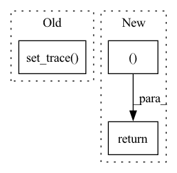

Pattern ID :27317
Before Change
x = x.to(torch.float32)
import pdb
pdb.set_trace()
config = set_evasion_model(query, victim_input_shape, victim_input_targets)
x_adv, y_adv = init_hopskipjump(config, data)
x = torch.cat((x, x_adv))
y = torch.cat((y, y_adv))After Change
print(result.shape)
y = torch.Tensor([query(x) for x in result])
y = y.long()
return result, y
In pattern: SUPERPATTERN
Frequency: 4
Non-data size: 3
Instances Fragment ID: 81118993
Project Name: trailofbits/privacyraven
Commit Name: dd71a208fe41d3cb3854115c2ce4d4318b3d52e0
Time: 2020-10-21
Author: suhashussain1@gmail.com
File Name: src/privacyraven/extraction/synthesis.py
M Class Name: AnonimousClass
N Class Name: AnonimousClass
M Method Name: hopskipjump(6)
N Method Name: hopskipjump(6)
M Parent Class:
N Parent Class:
M File Name: src/privacyraven/extraction/synthesis.py
N File Name: src/privacyraven/extraction/synthesis.py
M Start Line: 139
M End Line: 155
N Start Line: 118
N End Line: 144
Before Change
ptb = PerturbationLpNorm(norm=np.inf, eps=eps)
my_input = BoundedTensor(nominal_input, ptb)
import pdb; pdb.set_trace()
model = BoundedModule(model, nominal_input)
After Change
lb, ub = model.compute_bounds(x=(my_input,), method="backward")
output_constraint.range = np.vstack((lb.detach().numpy(), ub.detach().numpy())).T
return output_constraint, {}
Fragment ID: 81118992
Project Name: mit-acl/nn_robustness_analysis
Commit Name: 0da01fc517d436fe7bdf533c50f58149ec5b3e29
Time: 2023-03-07
Author: nrober1122@gmail.com
File Name: nn_closed_loop/nn_closed_loop/propagators/ClosedLoopAUTOLIRPAPropagator.py
M Class Name: ClosedLoopAUTOLIRPAPropagator
N Class Name: ClosedLoopAUTOLIRPAPropagator
M Method Name: get_one_step_reachable_set(4)
N Method Name: get_one_step_reachable_set(4)
M Parent Class: ClosedLoopPropagator
N Parent Class: ClosedLoopPropagator
M File Name: nn_closed_loop/nn_closed_loop/propagators/ClosedLoopAUTOLIRPAPropagator.py
N File Name: nn_closed_loop/nn_closed_loop/propagators/ClosedLoopAUTOLIRPAPropagator.py
M Start Line: 74
M End Line: 86
N Start Line: 76
N End Line: 87
Before Change
device=self.unconstrained_params.device
)
import pdb
pdb.set_trace()
out[:, self.full_idx] = pred
return pred
@jit.ignoreAfter Change
device=self.unconstrained_params.device
)
for i, (r, c) in enumerate(self.full_idx):
out[..., r, c ] = torch.sigmoid(pred[..., i])
return out
@jit.ignore
def set_id(self, id: str) -> "InnovationMatrix": Fragment ID: 81118994
Project Name: strongio/torchcast
Commit Name: ecf0c670043427ceb99f0d477bab626527ce8f20
Time: 2021-06-19
Author: jacob.dink@strong.io
File Name: torchcast/exp_smooth/innovation_matrix.py
M Class Name: InnovationMatrix
N Class Name: InnovationMatrix
M Method Name: forward(3)
N Method Name: forward(3)
M Parent Class: torch.nn.Module
N Parent Class: torch.nn.Module
M File Name: torchcast/exp_smooth/innovation_matrix.py
N File Name: torchcast/exp_smooth/innovation_matrix.py
M Start Line: 58
M End Line: 66
N Start Line: 61
N End Line: 68
Before Change
pbar.set_postfix(ShellLoss = "{:.3f}".format(val_loss.item()),
KernelLoss = "{:.3f}".format(loss.item()))
if val_loss.item() > 1 or loss.item() > 1 or val_loss.item() < 0 or loss.item() < 0:
pdb.set_trace()
return
After Change
postfix["Loss(optim_kernel)"] = round(sum_loss/(step+1), 3)
pbar.set_postfix(postfix)
return round(sum_val_loss/n_steps, 3), round(sum_loss/n_steps, 3)
def validate(self):
""" Fragment ID: 81118991
Project Name: woodywff/nas_3d_unet
Commit Name: 483c269d68b745c65d71e2a8566c35bd92e0b584
Time: 2020-03-23
Author: woodywff@aliyun.com
File Name: search.py
M Class Name: Searching
N Class Name: Searching
M Method Name: train(1)
N Method Name: train(1)
M Parent Class:
N Parent Class:
M File Name: search.py
N File Name: search.py
M Start Line: 139
M End Line: 176
N Start Line: 138
N End Line: 180